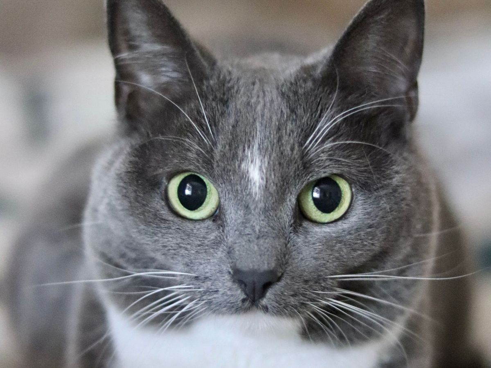
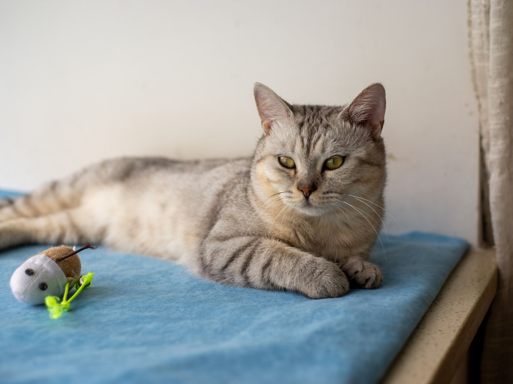
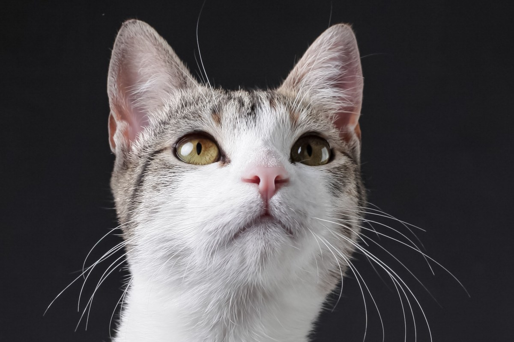

Puente Alto · veterinaria
¿Lo hago yo o lo traigo?
4,7 con 122 reseñas. Lo que haces tú, y lo que va a la clínica.
- 4,7de promedio en Google
- 122reseñas
- 15servicios en su agenda en línea
- 0sitio web: Google muestra «agregar sitio web»
Con buena voluntad
¿Esto lo puedo hacer yo?
Toca cada cosa para ver por qué va ahí.
En casa
Cepillarlo
Con su cepillo y con calma; si hay nudos que duelen, a peluquería.
Bañarlo
Sólo si el veterinario lo autoriza.
Mirar patas y orejas
Por fuera: que no haya heridas, espinas ni mal olor.
Pesarlo
Anota el peso: sirve en el próximo control.
A la clínica
Uñas que sangran
Se cortan en la clínica, con luz y sin apuro.
Oídos con olor o dolor
Hay que revisarlos por dentro.
Heridas
Aunque parezcan chicas.
Cualquier medicamento
Lo indica el veterinario, nunca uno de la casa.
Si dudas, llama.
(2) 2984 6126Lo que se hace en casa también es cuidado.
Servicios
Lo que hay en la clínica
-
Consulta
Control y vacunas
También desparasitación.
-

Cirugía
Y esterilización
Con hospitalización si hace falta.
-
Exámenes
Radiografía y ecografía
Y análisis clínicos.
-
Odontología
Dientes y encías
Lo que no se ve en casa.
-
Peluquería
Baño y corte
Para perros.
-

A domicilio
Cuando no puede salir
Se coordina por teléfono.
Los servicios salen de su agenda en AgendaPro; los detalles los confirma la clínica.
Ciento veintidós reseñas, y el dominio con su nombre, doctoravet.cl, es de otra veterinaria.
Google y NIC Chile, al 16-09-2026
Los pacientes
De cerca



Fotos de referencia: ninguna es de la clínica.
Dónde está
En Av. Gabriela Oriente
- Dirección
- Av. Gabriela Oriente 02535, Puente Alto
- Teléfono
- (2) 2984 6126
- Agenda en línea
- AgendaPro
- Horario
- Lun a vie 9:30–18:30 · Sáb y dom 11:00–18:30
En Google, donde va el sitio web, dice «agregar sitio web»: la agenda existe, pero nadie la encuentra desde ahí.
Av. Gabriela Oriente 02535 Abrir en Google Maps
Para la Clínica Doctora Vet
Qué es real y qué falta
Lo verificado
El 4,7 con 122 reseñas, la dirección, el teléfono, la agenda en AgendaPro con su horario y sus servicios. Y que doctoravet.cl es de otra veterinaria, con otro teléfono y otra zona.
Lo de ejemplo
La guía de casa o clínica y todas las fotos.
Lo que falta
Un sitio propio que Google pueda mostrar, con la agenda a un toque.